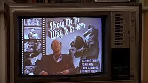
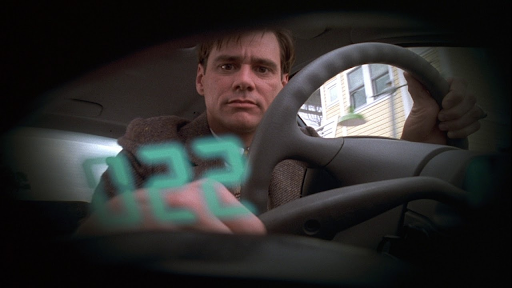
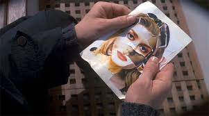
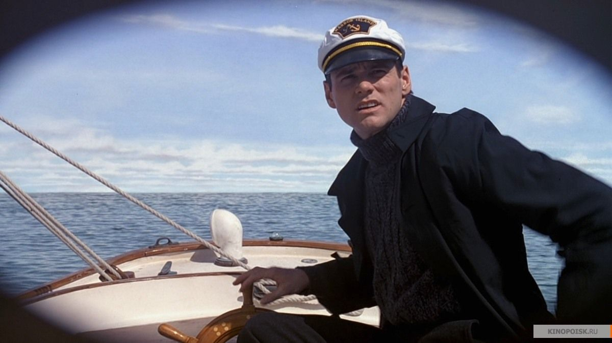

English work about "The Truman Show"
The type of Mass Media presented in the movie
Television(H0:38:12)
In his home, right after his wife and mother left him to watch his favourite show, the spokesman expresses that there's no place like seahaven, psychologicaly manipulating him to never desire to leave his town.
ㅤ
Radio(H0:04:02)
While Truman is driving to work, the radio broadcast indirectly speaks with him, subtly connecting on both his actions and connects.
ㅤ
NewsPaper(H0:05:45)
While Truman was working, his colleague show him that day's newspaper, with the frontpagye saying "The best place on earth - Seahaven", giving him more reasons to never want to leave that place
ㅤ
Magazines(H0:14:43)
Used by Truman to try and remake the love of his life face.
ㅤ



what kind of a movie it is
This movie is a movie inside another movie, it is a comedy because it can make you
laught and it can be considered a science fiction because beliving or not, this movie
shows another point of view into this world


What the movie represents
This movie represents a simulation of a life of a normal person that in this case is,
that is followed from his birth to the point that he escapes and this movie can represent
life too because we dont know if we are manipulated or not, if we are beeing watched and
followed or not, we dont really know if this is the true reality that we are living or
just a simulation that we dont know that we live in.
the means of comunication you can see within the movie
The means in the comunication are mostly to manipulate Truman, so he doesn't travel
to another country or city because they want him to stay and every type of comunication
is designed to scare him of goint to another place like the poster with the airplane beeing
struch by a lightning and saying "it could happen to you" and the radio always tries to manipulate
Truman to stay in his city like saying everytime that the weather is always good and that it is the
greatest city


Are these normal Media? Are they Manipulated? Are Media in general the same as in the movie?
The answer to this question depends on what each person considers to be normal. For instance, if for someone "normal" is what's presented to them, then the general media, presented both in the movie and in real life are normal. But if normal is considered the truth, then what's shown in the movie is odd, as they're actively omitting the truth.

Give your opinion on the following sentence:
"We Accept the reality of the world with witch we are presented"
The reality of the world on which each person lives in is shapped by their prespective on things.
an example, if a person were to be born in an Islamic country, it would've been common to see
women covered, due to their religion. Altho that isn't unseen in our world, it isn't
very common either, but it exists nonetheless.
Division of Work
Rodrigo Viana, 14548:I did the work with Hilário, I did the answering while Hilário passed, I created, updated and deployed the entire site, responsible for the topics: “The types of mass media presented in the movie”, “Are these normal Media? Are they Manipulated? Are Media in general the same as in the movie?” and "We Accept the reality of the world with witch we are presented".
Hilário Miguel, 14467:I put the topics covered into the notebook and digital format, helped build the ideas into the text, and was responsible for putting the text into the entire site.
Filipe Soblirov, 14469:I wrote the rest of the topics, with João Correia, organizing ideas, creating the github to store the site, resource images
João Correia, 14597:I told Filipe what to write, helped the team base it on moments from the movie, created the website template